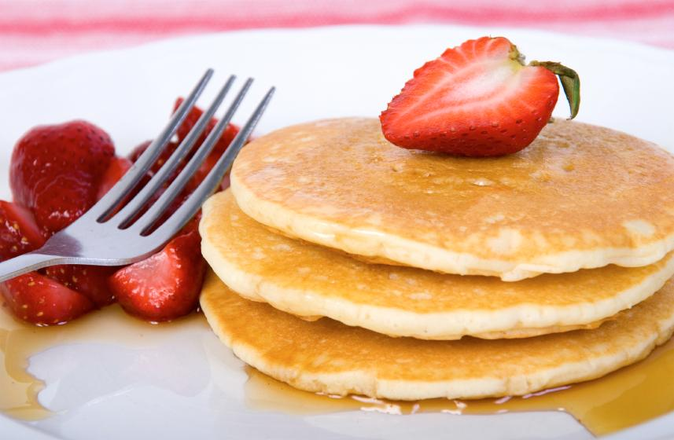

¡Cocina para todos!

La cocina nuestro lugar en la casa
Las mejores recetas para el dia a dia
Panqueques sin huevo

-
Los ingredientes son:
- Harina
- Levadura
- Azúcar
- Sal
- Leche Desnatada
-
Preparacion:
- Mezclar en un recipiente la harina, la levadura, el azúcar y la sal. Deberás remover todos los ingredientes hasta que quede una mezcla homogénea.
- En un recipiente aparte, deberás añadir la leche, el aceite y el agua y, cuando esté mezclado, añade los ingredientes que hemos mezclado
- Con la masa que se obtiene de la mezcla, tan sólo deberás echar un poco de aceite en una sartén y, cuando esté caliente, verter un poco de esta masa hasta que queden doraditos.
- Los panqueques están listos cuando veas que en la masa aparecen unas burbujas, entonces, este será el momento de dar la vuelta al panqueque y cocerlo por la otra cara
- Cuando estén dorados y se les haya quitado toda la humedad, podrás apartar la masa del fuego y servirlo inmediatamente caliente.
Cantidades Necesarias
| INGREDIENTE |
CANTIDAD |
REMPLAZABLE |
| Harina |
1 y 1/4 taza |
Premezcla |
| Levadura |
1 cucharada |
No |
| Azucar |
1 cucharada |
Edulcorante |
| Sal |
1/4 cucharada |
No |
| Leche Desnatada |
1 taza |
Leche Deslactozada |
Para mas info ingrese a:
Pagina de Referencia